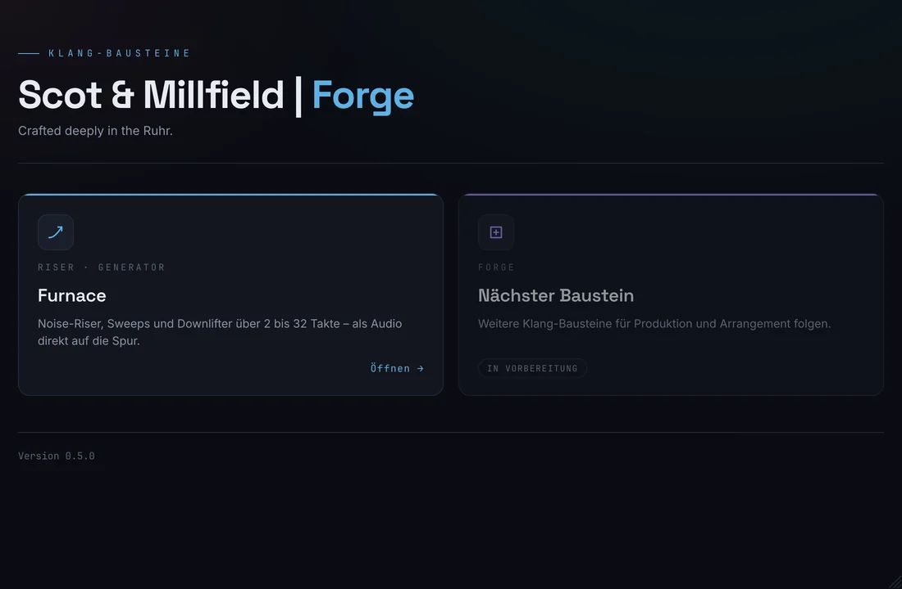

Scot & Millfield | ForgeForge :
Furnace
Crafted deeply in the Ruhr. Riser, Sweeps und Downlifter über 2 bis 32 Takte – synchron zum Projekt, mit Bewegung in der Textur, und am Ende als Audiodatei direkt auf der Spur.

2–32 Takte
12 Abschnitte
5 Werkspresets
24 Bit WAV
0 Samples Abweichung
01 / Überblick
Eine Werkbank,
viele Bausteine
Forge ist ein Plugin, das mehrere Klang-Bausteine bündelt. Jede Instanz hostet genau einen aktiven Baustein; der erste ist Furnace, der Riser-Generator.

Startseite
Kacheln
Jeder Baustein ist eine Kachel. „Öffnen →“ führt hinein, „← Forge“ zurück. Die Startseite ist nur eine Ansicht: Der zuletzt geöffnete Baustein bleibt aktiv und spielt weiter.
Baustein 01
Furnace
Noise-Riser, Sweeps und Downlifter. Eine MIDI-Note löst aus, die Länge kommt aus dem Plugin, das Ende sitzt exakt auf dem Zieltakt.
Ergebnis
Audio auf der Spur
Furnace rechnet im Hintergrund mit. Die fertige WAV-Datei ziehst du direkt aus dem Fenster auf eine Audiospur – oder nutzt „Render in Place“ in Cubase.
02 / Installation
In Cubase
einrichten
Forge wird als ZIP geliefert: ScotMillfieldForge_<Version>.zip. Eine .vst3 ist ein Ordner. Neue Versionen nur in einem Testprojekt laden.
ScotMillfieldForge.vst3 nach C:\Program Files\Common Files\VST3\ kopieren.Administrator-Bestätigung nötig · alte ScotMillfieldWorkbench.vst3 löschen, falls vorhanden%TEMP%\SM-Forge\ ab und räumt dort nach sieben Tagen auf.03 / Bedienung
Forge :
Furnace
Ein Riser lebt nicht nur vom Lauter- und Heller-Werden, sondern von Bewegung im Klang. Furnace beschreibt jedes bewegte Ziel als Kurve von Start nach Ende.

- KopfPreset-Leiste: ‹ › blättern, Name öffnet die Liste, „Speichern …“, „Löschen“.
- LeisteLänge, Richtung Auf/Ab, Grundton, Host-Tempo und Taktart, Vorhören.
- KurvenansichtCutoff, Lautstärke, Pitch und LFO-Rate über die Takte, mit Spielposition und Status.
- ReiterKlang, Modulation, Textur, Raum & Ende – zwölf nummerierte Abschnitte.
- FußWellenform des vorab gerechneten Risers, Drag-Kachel, „Speichern unter …“.
Auslösen
- MIDI-Note: Jede Note startet den Riser neu. Die Länge kommt aus „Länge“, nicht aus der Notenlänge. Furnace ist monophon.
- Vorhören: spielt den Riser ohne Note auf dem eingestellten Grundton. Während er läuft, heißt der Knopf „Stopp“.
- Grundton: bestimmt die Tonhöhe der Ton-Ebene bei Vorhören und Export (Standard C3). Eine gespielte MIDI-Note überschreibt ihn. Der Grundton gehört zum Song und wird nicht in Presets gespeichert.
Synchron zum Projekt
- Läuft der Transport, folgt Furnace der Songposition (PPQ) – auch bei Tempoautomation. Der Riser endet exakt auf dem Zieltakt; der Start ist samplegenau.
- Ohne Transport (gestoppt oder Standalone) zählt Furnace über die Zeit mit dem Host-Tempo. In der Standalone-Version ist das Tempo per Ziehen einstellbar.
- Springt die Wiedergabe zurück (Cycle) oder um mehr als einen Takt, stoppt der Riser mit einem kurzen Ausblenden.
Richtung
Auf ist der klassische Riser. Ab macht daraus einen Downlifter: Alle Kurven laufen rückwärts – hell und laut zuerst, dunkel und leise am Ende. Beim Umschalten springt die Standardlänge von 8 auf 2 Takte.

Kurven
Jedes bewegte Ziel hat einen Startwert, einen Endwert und eine Kurvenform zwischen −1 und +1. Positive Werte steigen erst langsam, dann schnell (der typische Riser), negative umgekehrt. Cutoff und LFO-Rate verlaufen logarithmisch, Lautstärke in dB, Pitch in Halbtönen. Unter jedem Start/Ende-Paar zeigt ein kleiner Regler die Form.
Bedienelemente
- Drehregler: senkrecht ziehen, Strg + Ziehen für feine Schritte, Doppelklick setzt den Standardwert, Mausrad geht schrittweise.
- Auswahlfelder (Länge, Filtertyp …): Klick auf das Segment.
- Jede Änderung ist eine Geste in Cubase: rückgängig machbar und automatisierbar. Alle Klang-Parameter heißen in der Automation „Furnace …“.
- Ausgegraute Bereiche (Ton aus, Schicht aus, Delay aus) bleiben bedienbar.
04 / Reiter Klang
Quelle, Filter,
Lautstärke
Rauschen und optional ein Ton laufen gemeinsam durch den Filter. Abschnitte 01 bis 04.
05 / Reiter Modulation
LFO, Ducking,
Stereo
Bewegung im Takt: ein beschleunigender LFO, Pumpen im Raster des Projekts und ein Stereobild, das immer schneller pendelt.

06 / Reiter Textur
Bewegung
im Klang
Das wandernde Zischen und eine zweite Schicht, die später einsetzt – damit der Riser nicht nur lauter wird, sondern lebt.

07 / Reiter Raum & Ende
Raum, Delay,
Ende
Der Riser öffnet sich zum Ende räumlich. Und er endet entweder hart auf dem Takt – oder klingt mit einer Fahne aus.


08 / Export
Auf die
Audiospur
Vorschau = Export: Die Datei entsteht mit derselben Engine und demselben Seed wie das Vorhören – Sample für Sample identisch.

So geht’s
- Klang einstellen. Furnace rechnet 0,3 s nach der letzten Änderung im Hintergrund neu („Rechnet …“, dann „Bereit“).
- Die Kachel Auf Audiospur ziehen mit der Maus auf eine Audiospur in Cubase ziehen – am besten an den Taktanfang.
- Alternativ Speichern unter … für eine Kopie an beliebigem Ort.
Die Datei
- WAV, 24 Bit, Stereo, ohne Normalisierung. Liegt die Spitze über 0 dBFS, wird sie rot angezeigt.
- Tempo und Samplerate des Projekts (Standalone: 48 kHz). Länge samplegenau: Takte × Viertel pro Takt × 60 / BPM × Samplerate, bei „Ausklingen“ plus Fahne.
- Name:
Riser_8Bars_124BPM_A2_Tonal-Supersaw_1.wav– Takte, Tempo, Grundton, Preset, Seed.
Tempoautomation
Der Export nutzt ein festes Tempo. Ändert sich das Tempo im Projekt während der Wiedergabe, weist die Wellenform darauf hin: Für die exakte Länge dann die Instrumentenspur per Render in Place in Cubase rendern – der Riser folgt beim Abspielen der Tempoautomation ohnehin genau.
09 / Presets
Werkspresets &
eigene Klänge
Presets speichern den Klang, nicht den Song: Der Grundton bleibt beim Laden erhalten. Alle Werkspresets bleiben unter 0 dBFS.

Eigene Presets
- Speichern … legt den aktuellen Klang unter einem Namen in „Eigene Presets“ ab. Gleicher Name → Rückfrage „Ersetzen?“.
- Ablage:
Dokumente\Scot & Millfield Forge\Presets\Furnaceals XML – „Preset-Ordner öffnen“ im Menü führt direkt hin. - Löschen gilt nur für eigene Presets; der aktuelle Klang bleibt dabei erhalten.
- Das Projekt merkt sich das zuletzt geladene Preset; der Name steht auch im Dateinamen des Exports.
10 / Tipps
Wenn etwas
klemmt
Wellenform ist ein Strich
Der Riser ist sehr leise oder stumm – oft stehen beide Cutoff-Punkte ganz unten. Doppelklick auf die Griffe in der Kurvenansicht oder ein Werkspreset laden.
Kein Ton beim Vorhören
In der Standalone-Version unter „Options“ ein Ausgabegerät wählen (Windows Audio genügt). In Cubase: Spur ausgewählt, Monitoring an.
Riser stoppt im Cycle
Gewollt: Beim Rücksprung stoppt Furnace und startet mit der nächsten Note neu. Note an den Anfang des Cycle-Bereichs legen.
Fenster zu klein
Das Fenster lässt sich von 900 × 600 bis 1600 × 1000 ziehen. Ist es zu niedrig, scrollt die Seite statt zu quetschen.